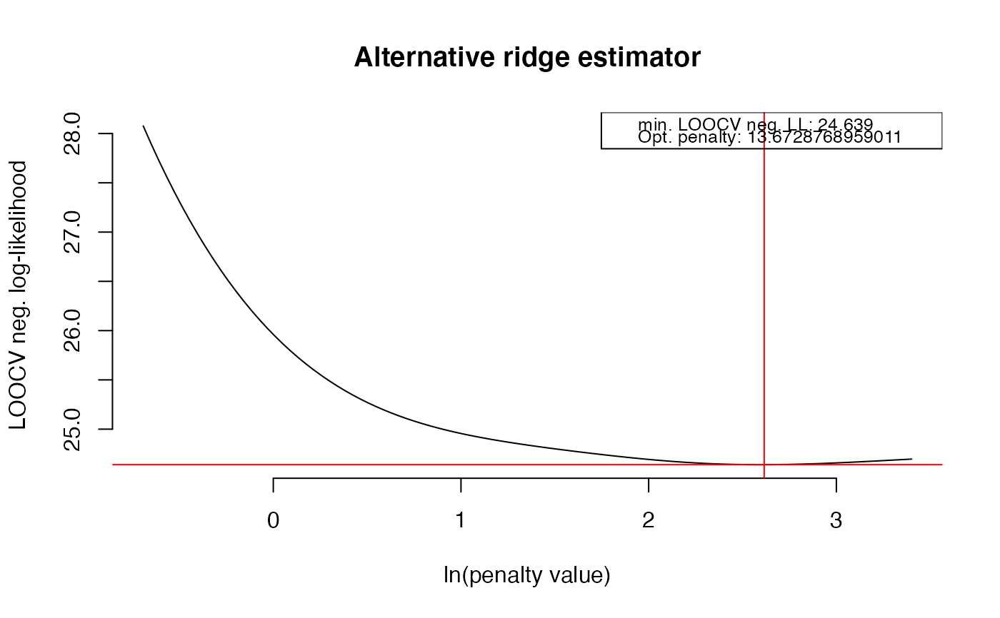
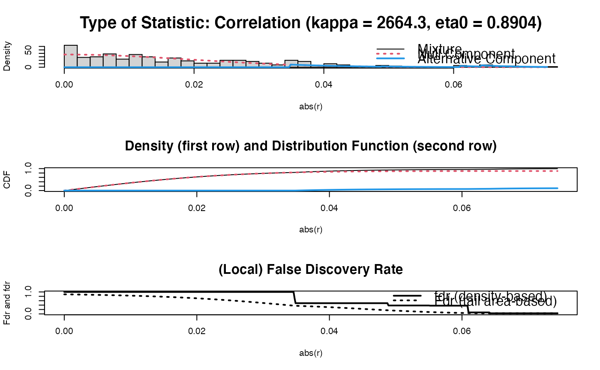
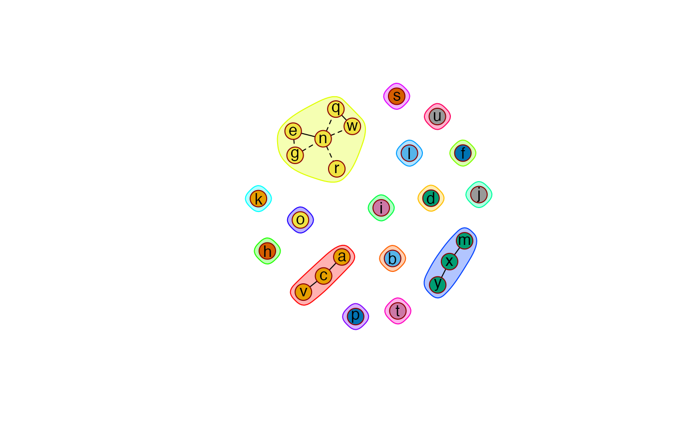

Function that searches for and visualizes community-structures in graphs.
Communities( P, graph = TRUE, lay = "layout_with_fr", coords = NULL, Vsize = 15, Vcex = 1, Vcolor = "orangered", VBcolor = "darkred", VLcolor = "black", main = "" )
| P | Sparsified precision |
|---|---|
| graph | A |
| lay | A |
| coords | A |
| Vsize | A |
| Vcex | A |
| Vcolor | A |
| VBcolor | A |
| VLcolor | A |
| main | A |
An object of class list:
numeric vector
indicating, for each vertex, community membership.
numeric scalar indicating the modularity value
of the community structure.
Communities in a network are groups of vertices (modules) that are densely connected within. Community search is performed by the Girvan-Newman algorithm (Newman and Girvan, 2004).
When graph = TRUE the community structure in the graph is visualized.
The default layout is according to the Fruchterman-Reingold algorithm
(1991). Most layout functions supported by igraph are
supported (the function is partly a wrapper around certain
igraph functions). The igraph layouts can be invoked by a
character that mimicks a call to a igraph layout
functions in the lay argument. When using lay = NULL one can
specify the placement of vertices with the coords argument. The row
dimension of this matrix should equal the number of vertices. The column
dimension then should equal 2 (for 2D layouts) or 3 (for 3D layouts). The
coords argument can also be viewed as a convenience argument as it
enables one, e.g., to layout a graph according to the coordinates of a
previous call to Ugraph. If both the the lay and the coords arguments
are not NULL, the lay argument takes precedence. Communities are
indicated by color markings.
Csardi, G. and Nepusz, T. (2006). The igraph software package for complex network research. InterJournal, Complex Systems 1695. http://igraph.sf.net
Fruchterman, T.M.J., and Reingold, E.M. (1991). Graph Drawing by Force-Directed Placement. Software: Practice & Experience, 21: 1129-1164.
Newman, M. and Girvan, M. (2004). Finding and evaluating community structure in networks. Physical Review E, 69: 026113.
Carel F.W. Peeters <carel.peeters@wur.nl>
## Obtain some (high-dimensional) data p = 25 n = 10 set.seed(333) X = matrix(rnorm(n*p), nrow = n, ncol = p) colnames(X)[1:25] = letters[1:25] ## Obtain regularized precision under optimal penalty OPT <- optPenalty.LOOCV(X, lambdaMin = .5, lambdaMax = 30, step = 100)#> Perform input checks... #> Calculating cross-validated negative log-likelihoods... #> lambda = 0.5 done #> lambda = 0.521112064796442 done #> lambda = 0.543115568152822 done #> lambda = 0.56604815028642 done #> lambda = 0.589949040739926 done #> lambda = 0.614859125489326 done #> lambda = 0.640821016885354 done #> lambda = 0.667879126548165 done #> lambda = 0.696079741339917 done #> lambda = 0.725471102545235 done #> lambda = 0.756103488394997 done #> lambda = 0.788029300074619 done #> lambda = 0.821303151363959 done #> lambda = 0.855981962062195 done #> lambda = 0.89212505535748 done #> lambda = 0.929794259307953 done #> lambda = 0.969054012607691 done #> lambda = 1.00997147481854 done #> lambda = 1.0526166412564 done #> lambda = 1.09706246272843 done #> lambda = 1.14338497032617 done #> lambda = 1.19166340548777 done #> lambda = 1.24198035555219 done #> lambda = 1.29442189503684 done #> lambda = 1.34907773288074 done #> lambda = 1.40604136590477 done #> lambda = 1.46541023875169 done #> lambda = 1.52728591057948 done #> lambda = 1.59177422879317 done #> lambda = 1.65898551011235 done #> lambda = 1.72903472928405 done #> lambda = 1.80204171576394 done #> lambda = 1.87813135870213 done #> lambda = 1.95743382058443 done #> lambda = 2.04008475989428 done #> lambda = 2.12622556317653 done #> lambda = 2.21600358689979 done #> lambda = 2.30957240953135 done #> lambda = 2.40709209425555 done #> lambda = 2.5087294627854 done #> lambda = 2.61465838073554 done #> lambda = 2.72506005504483 done #> lambda = 2.84012334395744 done #> lambda = 2.96004508009247 done #> lambda = 3.08503040715507 done #> lambda = 3.21529313086478 done #> lambda = 3.35105608470152 done #> lambda = 3.49255151109498 done #> lambda = 3.64002145870927 done #> lambda = 3.79371819650269 done #> lambda = 3.9539046452707 done #> lambda = 4.12085482741052 done #> lambda = 4.29485433567656 done #> lambda = 4.47620082172873 done #> lambda = 4.66520450530918 done #> lambda = 4.86218870491866 done #> lambda = 5.0674903909002 done #> lambda = 5.28146076187626 done #> lambda = 5.50446584552545 done #> lambda = 5.73688712472652 done #> lambda = 5.97912219014072 done #> lambda = 6.23158542034891 done #> lambda = 6.49470869070685 done #> lambda = 6.76894211213128 done #> lambda = 7.05475480108065 done #> lambda = 7.3526356820475 done #> lambda = 7.66309432393553 done #> lambda = 7.98666181175188 done #> lambda = 8.32389165510583 done #> lambda = 8.67536073506814 done #> lambda = 9.04167029101067 done #> lambda = 9.42344694911443 done #> lambda = 9.8213437943055 done #> lambda = 10.2360414874525 done #> lambda = 10.6682494297369 done #> lambda = 11.1187069761873 done #> lambda = 11.5881847004551 done #> lambda = 12.0774857129934 done #> lambda = 12.587447034895 done #> lambda = 13.11894102974 done #> lambda = 13.6728768959011 done #> lambda = 14.2502022218612 done #> lambda = 14.8519046072019 done #> lambda = 15.4790133520375 done #> lambda = 16.1326012177839 done #> lambda = 16.813786262274 done #> lambda = 17.5237337523593 done #> lambda = 18.2636581572701 done #> lambda = 19.0348252261428 done #> lambda = 19.8385541532693 done #> lambda = 20.6762198347724 done #> lambda = 21.5492552205668 done #> lambda = 22.4591537656302 done #> lambda = 23.4074719847766 done #> lambda = 24.3958321153036 done #> lambda = 25.4259248920664 done #> lambda = 26.499512439728 done #> lambda = 27.6184312871313 done #> lambda = 28.7845955089513 done #> lambda = 30 done## Determine support regularized standardized precision under optimal penalty PC0 <- sparsify(symm(OPT$optPrec), threshold = "localFDR")$sparseParCor#> Step 1... determine cutoff point #> Step 2... estimate parameters of null distribution and eta0 #> Step 3... compute p-values and estimate empirical PDF/CDF #> Step 4... compute q-values and local fdr #> Step 5... prepare for plotting#> #> - Retained elements: 11 #> - Corresponding to 3.67 % of possible edges #>## Search and visualize communities Commy <- Communities(PC0)#> Warning: 'as.is' should be specified by the caller; using TRUE#> Warning: 'as.is' should be specified by the caller; using TRUE